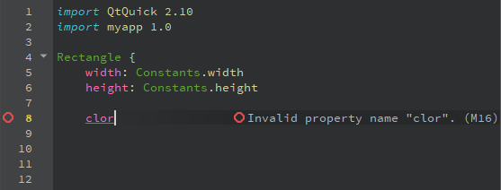
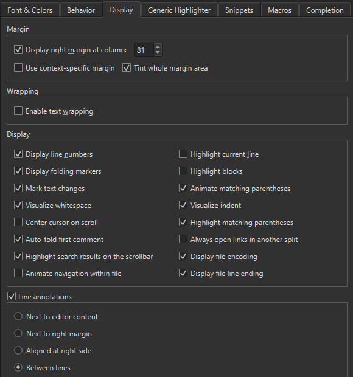
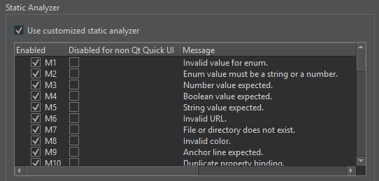
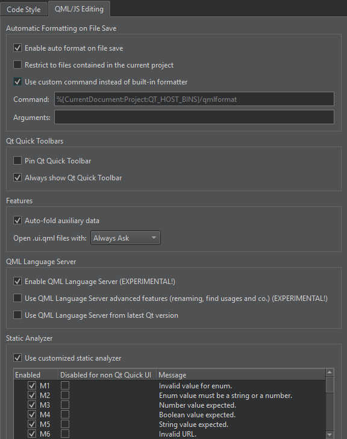

Checking Code Syntax
As you write code, Qt Design Studio checks code syntax. When Qt Design Studio spots a syntax error in your code, it underlines it, displays an icon, and shows error details when you move the mouse pointer over the error or the icon. If a fix is available, you can apply it by clicking .
Similarly, when you are working on an instance of a JavaScript object notation (JSON) entity, Qt Design Studio underlines errors in the JSON data structure.
In addition to underlining, errors and warnings are marked with icons and annotated. When writing QML or JavaScript code, the annotations may have error codes listed in JavaScript and QML Error Codes.

Specifying Line Annotation Positions
To specify the position where the annotations are displayed, select Preferences > Text Editor > Display > Line annotations, and then select whether to display the annotations directly next to the code, aligned to the right of the code, or in the right margin. Showing annotations between lines can be useful if there is usually not enough space to display annotations next to the text.

If you hide the annotations by deselecting the check box, you can move the mouse pointer over an icon to view them.
JavaScript and QML Error Codes
You can run static checks on the QML and JavaScript code in your project to find common problems. To run the checks, select Tools > QML/JS > Run Checks or press Ctrl+Shift+C. The results are shown in the QML and QML Analysis filters in Issues.
Many of the error messages are similar to the ones in Douglas Crockford's JSLint tool. For more information about JSLint errors, see JSLint Error Explanations.
| Id | Severity | Message | Description |
|---|---|---|---|
| M1 | Error | Invalid value for enum | |
| M2 | Error | Enum value must be a string or a number | |
| M3 | Error | Number value expected | |
| M4 | Error | Boolean value expected | |
| M5 | Error | String value expected | |
| M6 | Error | Invalid URL | |
| M7 | Warning | File or directory does not exist | |
| M8 | Error | Invalid color | |
| M9 | Error | Anchor line expected | |
| M10 | Error | Duplicate property binding | See also: Duplicate key '{a}'. |
| M11 | Error | Id expected | See also: Expected an identifier and instead saw '{a}' (a reserved word). |
| M14 | Error | Invalid id | See also: Expected an identifier and instead saw '{a}' (a reserved word). |
| M15 | Error | Duplicate id | Ids in a file must be unique. See also: Duplicate key '{a}'. |
| M16 | Error | Invalid property name name | |
| M17 | Error | Name does not have members | |
| M18 | Error | Field is not a member of object | |
| M19 | Warning | Assignment in condition | It could be a typing error. If it is intentional, wrap the assignment in parentheses. |
| M20 | Warning | Unterminated non-empty case block | Case blocks should either be empty or end in a flow control statement such as break, return or continue. Alternatively you can indicate intentional fall through by ending with a // fall through comment. |
| M23 | Warning | Do not use eval | See also: eval is evil. |
| M28 | Warning | Unreachable | Indicates that the underlined statement will never be executed. |
| M29 | Warning | Do not use with | See also: Unexpected 'with'. |
| M30 | Warning | Do not use comma expressions | |
| M31 | Warning | Unnecessary message suppression | |
| M103 | Warning | Name is already a formal parameter | |
| M104 | Warning | Name is already a function | |
| M105 | Warning | Var name is used before its declaration | |
| M106 | Warning | Name already is a var | |
| M107 | Warning | Name is declared more than once | Variables declared in a function are always visible everywhere in the function, even when declared in nested blocks or for statement conditions. Redeclaring a variable has no effect. |
| M108 | Warning | Function name is used before its declaration | See also: {a} was used before it was defined. |
| M109 | Warning | Do not use Boolean as a constructor | See also: Do not use {a} as a constructor. |
| M110 | Warning | Do not use String as a constructor | See also: Do not use {a} as a constructor. |
| M111 | Warning | Do not use Object as a constructor | See also: Do not use {a} as a constructor. |
| M112 | Warning | Do not use Array as a constructor | See also: Do not use {a} as a constructor. |
| M113 | Warning | Do not use Function as a constructor | See also: Do not use {a} as a constructor. |
| M114 | Hint | The function keyword and the opening parenthesis should be separated by a single space | See also: Expected exactly one space between {a} and {b}. |
| M115 | Warning | Do not use stand-alone blocks | Blocks do not affect variable scoping. Thus blocks that are not associated to if, while, etc. have no effect and should be avoided. |
| M116 | Warning | Do not use void expressions | |
| M117 | Warning | Confusing pluses | See also: Confusing pluses. |
| M119 | Warning | Confusing minuses | See also: Confusing minuses. |
| M121 | Hint | Declare all function vars on a single line | |
| M123 | Hint | Unnecessary parentheses | |
| M126 | Warning | == and != may perform type coercion, use === or !== to avoid it | The non-strict equality comparison is allowed to convert its arguments to a common type. That can lead to unexpected results such as ' \t\r\n' == 0 being true. Use the strict equality operators === and !== and be explicit about conversions you require. |
| M127 | Warning | Expression statements should be assignments, calls or delete expressions only | |
| M128 | Error | A state cannot have the specified child item | |
| M129 | Error | Type cannot be instantiated recursively | |
| M201 | Hint | Place var declarations at the start of a function | See also: Move 'var' declarations to the top of the function. |
| M202 | Hint | Use only one statement per line | |
| M203 | Warning | Imperative code is not supported in Qt Design Studio | |
| M204 | Warning | This QML type is not supported in Qt Design Studio | |
| M205 | Warning | Reference to parent QML type cannot be resolved correctly by Qt Design Studio | |
| M206 | Warning | This visual property binding cannot be evaluated in the local context and might not show up in Qt Design Studio as expected | |
| M207 | Warning | Qt Design Studio only supports states in the root QML type | |
| M208 | Error | This id might be ambiguous and is not supported in Qt Design Studio | |
| M209 | Error | This type (type name) is not supported as a root element in Qt Design Studio | |
| M220 | Error | This type (type name) is not supported as a root element of a UI file (.ui.qml) | For more information about supported QML types, see UI Files. |
| M221 | Error | This type (type name) is not supported in a UI file (.ui.qml) | For more information about supported QML types, see UI Files. |
| M222 | Error | Functions are not supported in a UI file (.ui.qml) | For a list of supported JavaScript functions, see Supported Methods. |
| M223 | Error | JavaScript blocks are not supported in a UI file (.ui.qml) | For more information about supported features, see UI Files. |
| M224 | Error | Behavior type is not supported in a UI file (.ui.qml) | For more information about supported QML types, see UI Files. |
| M225 | Error | States are only supported in the root item in a UI file (.ui.qml) | For more information about supported features, see UI Files. |
| M226 | Error | Referencing the parent of the root item is not supported in a UI file (.ui.qml) | For more information about supported features, see UI Files. |
| M227 | Error | Do not mix translation functions in a UI file (.ui.qml) | Even though several different translation functions, such as qsTr and qsTrId are supported, you should pick one and use it consistently within a UI file. For more information, see Qt QML Methods. |
| M300 | Error | Unknown component | |
| M301 | Error | Could not resolve the prototype name of object | |
| M302 | Error | Could not resolve the prototype name | |
| M303 | Error | Prototype cycle, the last non-repeated component is name | |
| M304 | Error | Invalid property type name | |
| M305 | Warning | == and != perform type coercion, use === or !== to avoid it | See M126. |
| M306 | Warning | Calls of functions that start with an uppercase letter should use new | By convention, functions that start with an uppercase letter are constructor functions that should only be used with new. |
| M307 | Warning | Use new only with functions that start with an uppercase letter | See also: Do not use {a} as a constructor. |
| M308 | Warning | Do not use Number as a constructor | See also: Do not use {a} as a constructor. |
| M309 | Hint | Use spaces around binary operators | |
| M310 | Warning | Unintentional empty block, use ({}) for empty object literal | |
| M311 | Hint | Use type instead of var or variant to improve performance | |
| M312 | Error | Missing property number | |
| M313 | Error | Object value expected | |
| M314 | Error | Array value expected | |
| M315 | Error | Value value expected | |
| M316 | Error | Maximum number value is number | |
| M317 | Error | Minimum number value is number | |
| M318 | Error | Maximum number value is exclusive | |
| M319 | Error | Minimum number value is exclusive | |
| M320 | Error | String value does not match required pattern | |
| M321 | Error | Minimum string value length is number | |
| M322 | Error | Maximum string value length is number | |
| M323 | Error | Number elements expected in array value | See also: The array literal notation [] is preferable. |
| M324 | Error | Hit maximum recursion limit visiting AST, the code model will be unreliable and most likely invalid | |
| M325 | Warning | Logical value does not depend on actual values | |
| M326 | Error | Components are only allowed to have a single child element | For more information, see Component. |
| M327 | Warning | Components require a child element | For more information, see Component. |
| M400 | Warning | Duplicate import | An import statement has been added twice. For more information, see Import Statements. |
| M401 | Error | Do not reference the root item as alias | The alias property cannot reference the root component directly. Create an instance of the component instead. |
| M402 | Warning | Avoid referencing the root item in a hierarchy | The alias property cannot reference the root component in a hierarchy. Create an instance of the component instead. |
Enabling and Disabling Messages
To enable and disable QML and JavaScript messages, select Preferences > Qt Quick > QML/JS Editing > Use customized static analyzer.

In Enabled, select the messages that you want to see. To disable messages for non-Qt Quick UI files, select them in Disable messages for non Qt Quick UI. You cannot enable messages just for non-Qt Quick UI files.
Resetting the Code Model
If you change the build and run kit when you have QML files open in the code editor, the code model might become corrupt. The following error message indicates that this might have happened: Using Qt Quick 1 code model instead of Qt Quick 2.
You can see the error message when you move the mouse pointer over code that Qt Design Studio underlines in the code editor or when you open a QML file in Qt Design Studio.
To reset the code model, select Tools > QML/JS > Reset Code Model.
Inspecting QML and JavaScript
To inspect QML and JavaScript properties, methods, and enums, move the cursor over them and select Tools > QML/JS > Inspect API for Element Under Cursor.
Automatically Formatting QML/JS Files
To automatically format QML/JS files upon saving, select Preferences > Qt Quick > QML/JS Editing > Enable auto format on file save. To only format files that belong to the current project, select Restrict to files contained in the current project.
To use an external tool, such as qmlformat, which automatically formats QML files according to QML coding conventions, select Use custom command instead of built-in formatter. In the Command field, enter the path to the tool. In the Arguments field, enter options for running the tool.

See also QML Language Server.